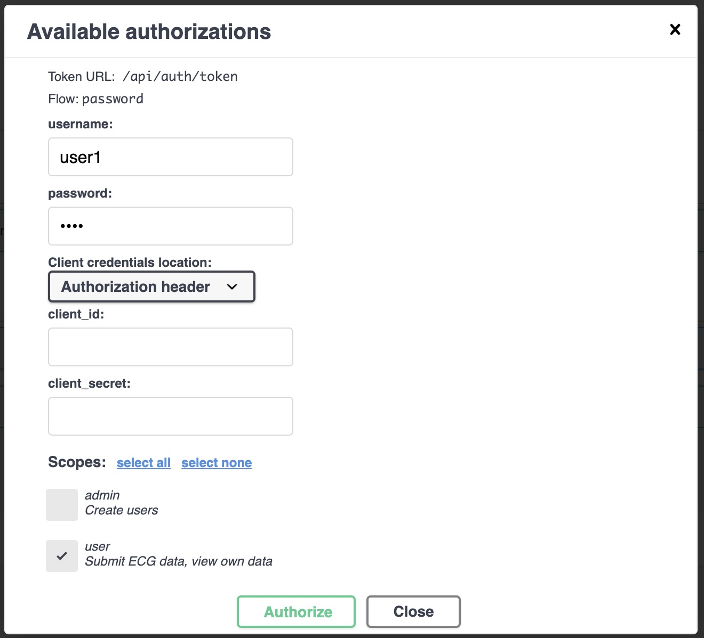
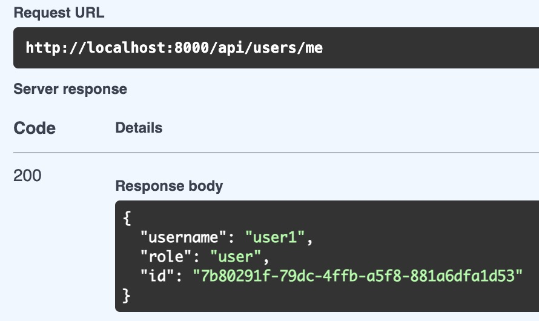

User login
Once you have your user created (with role user) you can login the same way you did with the admin user. Go to http://localhost:8000/api/docs and click on the Authorize button. Then, fill in the form with the following data:

Now you can use the user and ECG endpoints to upload and view ECGs.
